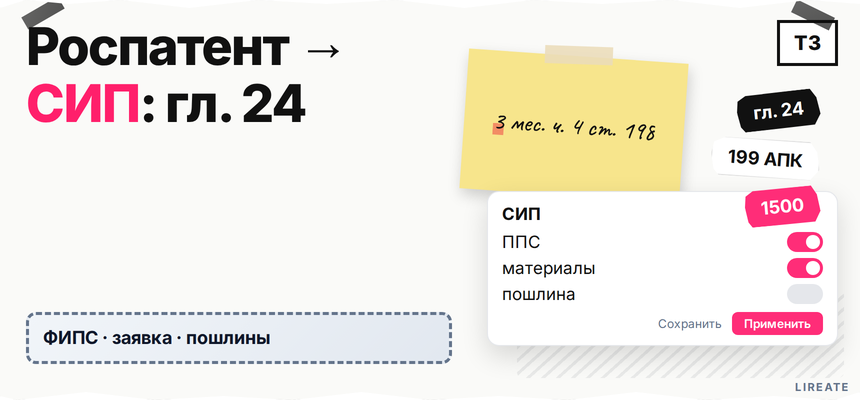
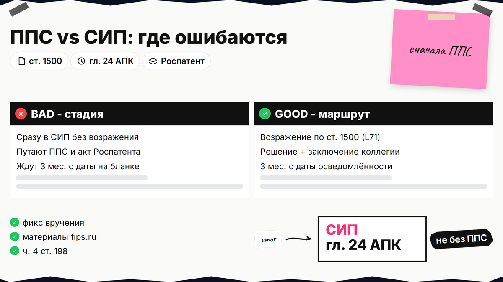
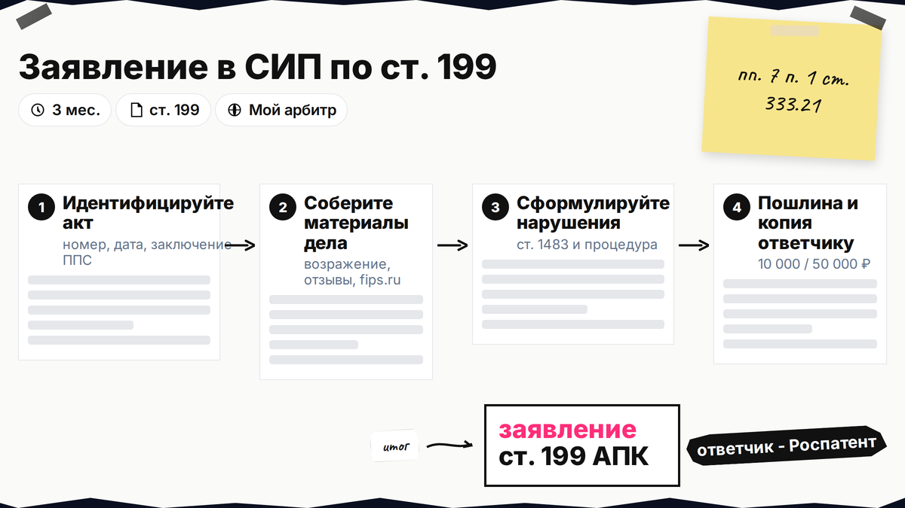
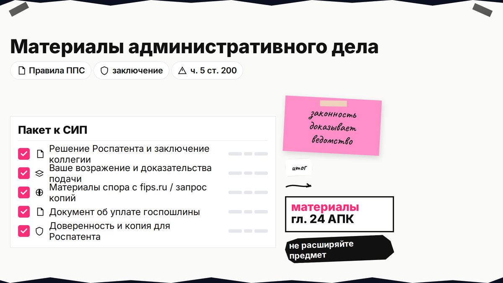

Роспатент оставил в силе отказ в регистрации вашего товарного знака после коллегии Палаты по патентным спорам. Дальше - не повторное письмо в ФИПС, а заявление в Суд по интеллектуальным правам (СИП) по главе 24 АПК РФ с проверкой срока, материалов дела и пошлины. Вы зафиксируете дату, когда узнали об итоговом решении, и подадите оспаривание акта ведомства, а не "жалобу на коллегию". Нормы сверены на 23.11.2026; материал не заменяет индивидуальную юридическную консультацию.

TL;DR / Быстрый инсайт: Обжалование решения Роспатента в СИП - это оспаривание ненормативного акта ведомства (ч. 2, 4 ст. 201 АПК), ответчик - Роспатент. Типичный маршрут заявителя: сначала возражение по ст. 1500 ГК РФ - см. возражение на отказ в регистрации своего товарного знака, затем 3 месяца на заявление с даты, когда вам стало известно о нарушении прав (ч. 4 ст. 198 АПК). Госпошлина по пп. 7 п. 1 ст. 333.21 НК РФ: 10 000 ₽ (физлица, в т.ч. ИП) / 50 000 ₽ (организации). Суд проверяет законность акта, а не проводит новую экспертизу с нуля (ч. 4-5 ст. 200 АПК).
Итоговое решение Роспатента по ППС - акт федерального органа; коллегия готовит заключение, подписывает Роспатент. СИП (ст. 43.4 АК РФ) признаёт такие акты недействительными по гл. 24 АПК. Сопровождение регистрации - на странице услуг Lireate по товарному знаку. Здесь - шаги после неудовлетворительного исхода в ППС, без повтора инструкции возражения.

Делайте: выпишите из решения номер, дату, предмет (отказ в регистрации, отмена регистрации, иное) и приложенное заключение коллегии - оно обязательная часть акта по Правилам ППС, п. 52. В заявлении перечислите, какие права в предпринимательской деятельности затронуты и какие нормы, на ваш взгляд, нарушены - без этого суд не удовлетворит требование (ч. 2 ст. 201 АПК).
Не делайте: писать, что обжалуете "решение ППС" без уточнения: процессуально оспаривается акт Роспатента. Не ждите, что СИП "переоценит сходство" как независимая экспертиза - проверка идёт в рамках законности, полномочий органа и нарушения прав заявителя; бремя доказывания законности - на Роспатенте (ч. 5 ст. 200 АПК).
| Вопрос | Что проверяет СИП | Что вне типичной компетенции гл. 24 |
|---|---|---|
| Соответствие ГК и подзаконным актам | Да: в т.ч. ст. 1483 на дату заявки (ориентир п. 27 ППВС № 10) | Новый макет "с нуля" вместо правовой оценки |
| Соблюдение Правил ППС | Да: сроки заседания, материалы спора, мотивировка | Повторная подача того же возражения без новых оснований |
| Иск к продавцу на маркетплейсе | Нет | Иск о нарушении по защите ИС в суде (ст. 1252, 1515) |
| Только формат логотипа (dpi, фон) | Частично, если это предмет отказа | Техническая доработка до суда - гайд по макету |
По ст. 1248 п. 2 ГК РФ сначала Роспатент, затем суд. Для отказа по своей заявке - возражение по ст. 1500 за 4 месяца; иначе СИП может вернуть заявление (С01-196/2014). Делайте: пройдите ППС по L71, храните трек и материалы на fips.ru. Не делайте: путать срок 4 месяца (ст. 1500) и 3 месяца (ч. 4 ст. 198 АПК).
| Стадия | Срок (типично) | Норма / источник |
|---|---|---|
| Возражение в ППС по своей заявке | 4 месяца с даты решения об отказе | п. 1 ст. 1500 ГК РФ |
| Решение Роспатента по итогам ППС | не позднее 2 мес. после заседания; направление за 5 раб. дней | Правила ППС, п. 52, 54 |
| Заявление в СИП | 3 месяца с даты осведомлённости о нарушении прав | ч. 4 ст. 198 АПК |
| Рассмотрение по гл. 24 (единолично) | как правило, до 3 месяцев с поступления | ч. 1 ст. 200 АПК |

Материалы спора доступны на fips.ru или с даты почтового отправления (Правила, п. 19, 21). Делайте: соберите решение, заключение, возражение, отзыв и запросите недостающее в Роспатент; свяжите доводы с листами дела. Не делайте: расширять предмет сверх ППС.

Заявление по ст. 199 АПК: реквизиты ст. 125, акт Роспатента, нарушенные права и нормы; ответчик - Роспатент. Делайте: разделите процедуру ППС и доводы по ст. 1483, приложите копию ответчику, оплатите 10 000 / 50 000 ₽ (калькулятор), подайте через "Мой арбитр". Не делайте: пошлину 3 000 ₽ из устаревших публикаций.
Маршрут заявителя после отказа в ППС:
Решение + заключение → календарь 3 мес. → пакет ст. 199 → пошлина → "Мой арбитр" → заседание → признание недействительным / отказ
В заседании держитесь доводов из материалов ППС: СИП не назначает повторную полноценную экспертизу вместо проверки законности акта (ч. 4 ст. 200 АПК).
Делайте: считайте 3 месяца с осведомлённости, при пропуске - ходатайство по ч. 4 ст. 198 АПК; при необходимости - приостановление акта (ч. 3 ст. 199 АПК). Не делайте: идти в СИП до ППС по своей заявке или путать СИП с арбитражем субъекта за компенсацию.
| Ошибка | Последствие | Как исправить до подачи |
|---|---|---|
| СИП без возражения по ст. 1500 | Возврат заявления как преждевременного | Сначала ППС по L71 |
| Срок 3 мес. с даты на бланке, а не вручения | Отказ по сроку или спор о восстановлении | Трек почты, акт, скрин личного кабинета |
| Нет текста акта и заключения коллегии | Оставление без движения / возврат | Полный комплект по ч. 2 ст. 199 АПК |
| Неверная пошлина (3 000 ₽) | Отказ в принятии | 10 000 / 50 000 ₽ по пп. 7 п. 1 ст. 333.21 |
| Ответчик - не Роспатент | Процессуальные нарушения | Указать федеральный орган из реестра |
При удовлетворении акт не применяют, решение исполняют немедленно (ч. 7-8 ст. 201 АПК; п. 32 ППВС № 21). Делайте: после отмены спланируйте шаги в Роспатенте, макет (L72) или иск к контрагенту (L74). Не делайте: считать, что регистрация наступит сама без указанного судом порядка.
Цепочку от возражения до суда проще вести с сопровождением: услуги Lireate по регистрации товарного знака помогают не потерять сроки между ППС и СИП.
Материал проверен: эксперт Елена Ковалева (Главный эксперт по SEO/GEO).
Достоверность данных: нормы ГК РФ, АПК РФ, АК РФ, Правила ППС и пошлины сверены на 23.11.2026; ключевые фразы согласованы с кластером A18 "обжалование решения Роспатента в СИП".
Для отказа по своей заявке - рискованно: без возражения по ст. 1500 заявление могут вернуть. Сначала пройдите ППС по инструкции L71, затем оспаривайте итоговый акт Роспатента.
Со дня осведомлённости о нарушении прав (ч. 4 ст. 198 АПК). Сохраните трек, акт или скрин кабинета.
Процессуально - ненормативный правовой акт Роспатента с приложенным заключением коллегии. Коллегия ППС готовит заключение; подписывает решение Роспатент.
Текст акта, пакет по ст. 126 АПК, материалы ППС, пошлина, копия для Роспатента, доверенность; в тексте заявления - номера приложений.
По пп. 7 п. 1 ст. 333.21 НК РФ: 10 000 ₽ для физлиц (в т.ч. ИП), 50 000 ₽ для организаций. Перед оплатой проверьте сумму в калькуляторе на ipc.arbitr.ru на дату подачи.
ППС не примет те же доводы без новых фактов. СИП проверяет законность акта по гл. 24 АПК.
Акт не применяют; исполняйте решение и завершите процедуру в Роспатенте (экспертиза, регистрация, доработка заявки).